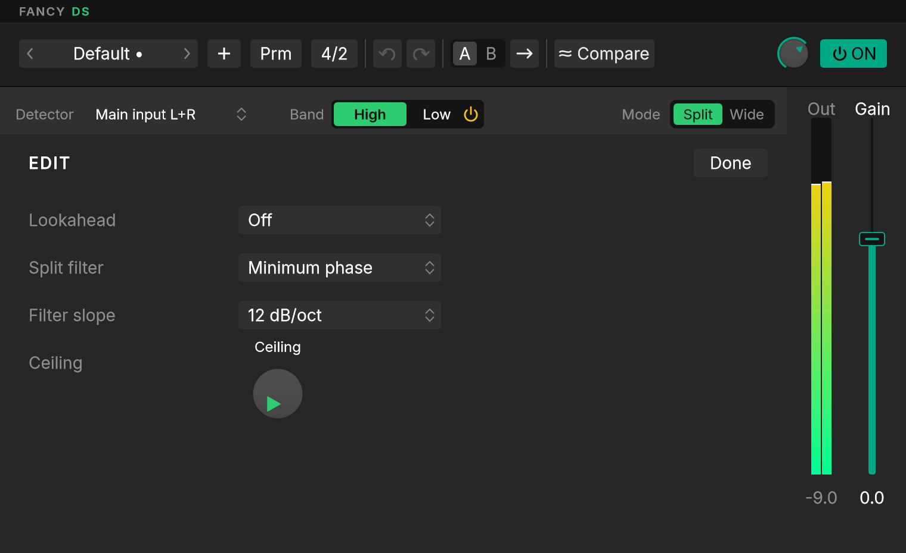

Fancy DS and DS-Mini: Phase 4 Wave 2 mockup (Mid/Side reduction and Hiss)
docs/ds.md, Phase 4 Wave 2: Mid/Side reduction, Hiss mode and DS-Mini's Hiss profile (items 32 to 34), Decisions 1 to 3 A. New things in dashed yellow, on the plugin's real screenshot (1x coordinates).
1 · DS: Band | Shelf | Hiss in the DETECTION card
Hiss is a third choice in the Detection switch, which keeps its size and text. Hiss uses the shelf above Freq and turns it down while it falls below Threshold, by up to Range. Width dims, as it does in Shelf.
Attack is how fast the cut lets go when the highs come back, and Release how fast it closes in a gap, so they keep their meaning. The history then shows the reduction in the gaps, between the "s" sounds. Band and Shelf are as today, to the bit.
2 · DS: the EDIT drawer's Reduce row
Reduce: Both | Mid | Side (Both by default) goes under Filter slope; Ceiling moves down a row. With Mid, only the centre is de-essed, so wide cymbals keep their highs.

ReduceMid
Ceiling
Both is today's path, to the bit. The main window doesn't change.
3 · DS-Mini: a seventh profile, Hiss
Hiss comes after the six sibilance and instrument profiles, after a divider: Hiss mode with the shelf at 5 kHz. Amount sets how deep it cuts in the gaps.

Hiss
Hiss · above 5.0 kHz, in the gaps
The caption names the band, as for the other profiles. Save as Fancy DS preset carries it over to DS as Hiss mode with the same settings.